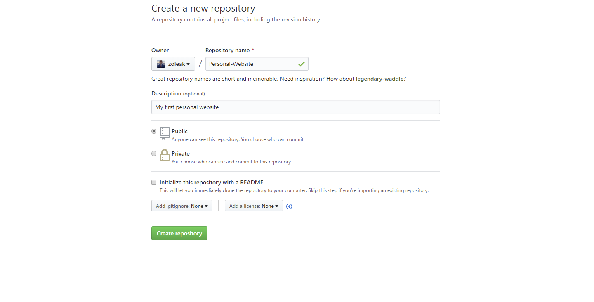
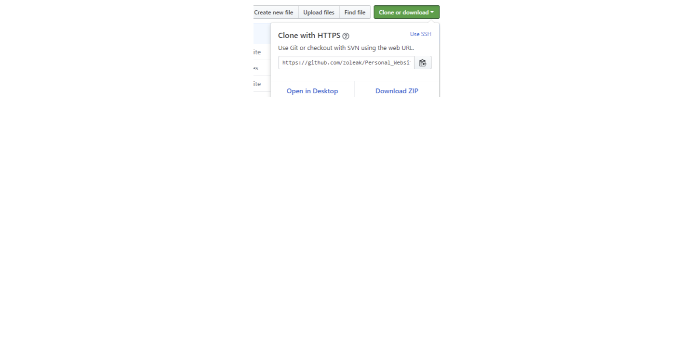
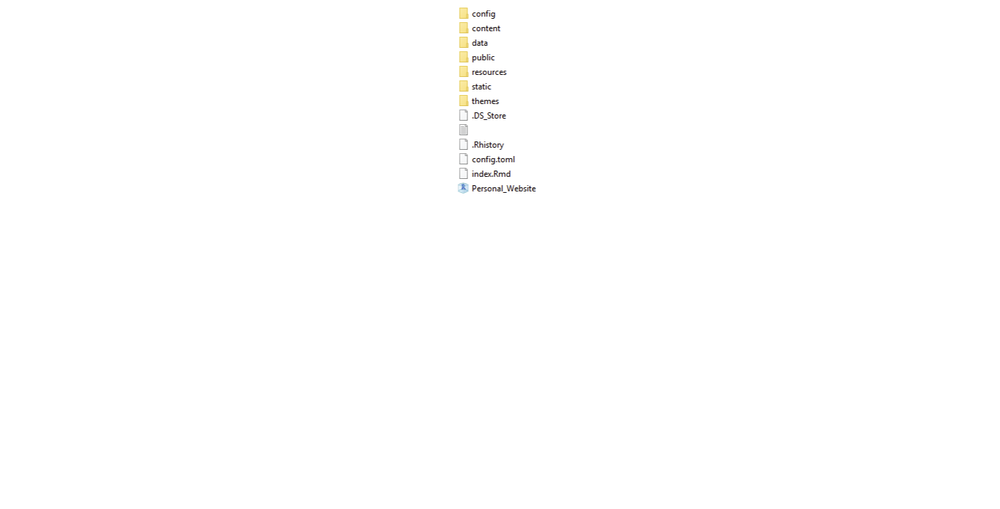
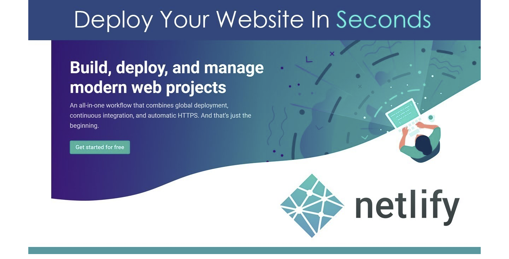
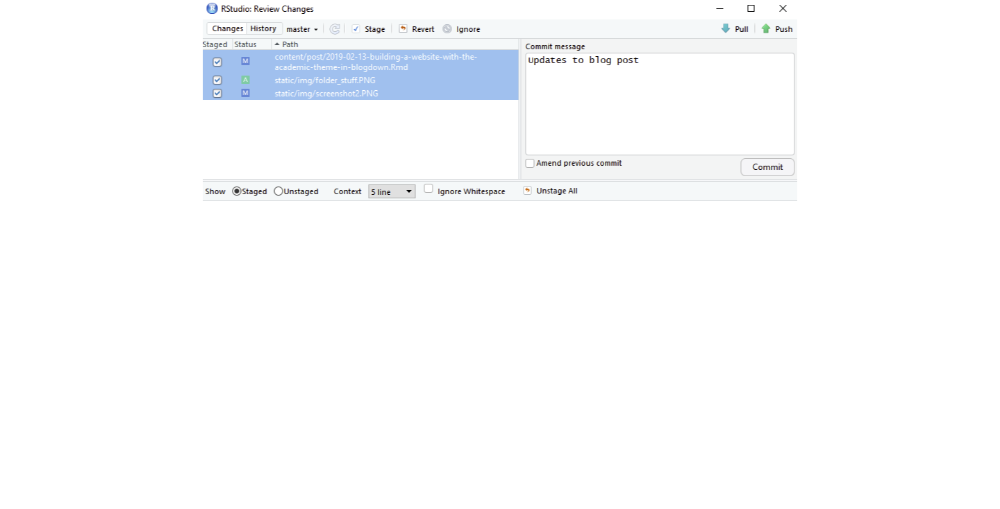

Introduction:
I’ve been told countless times that creating a personal website is an excellent way to showcase one’s skills and tell their story. However, I kept procrastinating, using the excuses that it would be too difficult and too costly. But after discovering the blogdown package while using R this past year, I realized how wrong I was. Blogdown is an incredible package that allows you to create blogs and websites using R Markdown. While it’s not necessarily a piece of cake, I found that even with no prior website development knowledge, I was able to create a site with relative ease. This blog post provides an overview of how I did it, although it’s by no means an exhaustive guide. I should also note that this is just a basic introduction to creating a website/blog with blogdown - the possibilities are almost endless, especially if you have a grasp of CSS, HTML, and Javascript.

Creating a Repository and Cloning it
- I am going to assume you have used GitHub before, but if you haven’t, that is completely fine. You can check out this site to get a better understanding. Once you have a good understanding of GitHub and have an account created, you need to create a new repository. You can name this repository anything you want but it’s usually best practice to give it a meaningful name.

Once you click create repository you should be on your repository page.
- Now you have to create a local copy of your repository or in other words “clone it”. To do this click the green “Clone or Download” button on the right hand side and copy the url displayed.

3. So in order to “clone” the repo with the url that you just copied, you’re going to have to use git. If you don’t know anything about git, I recommend reading Happy Git and GitHub for the useR. Now you can do this in numerous different ways. You can open Terminal if you’re on a Mac, if you’re on windows you can open Git Bash or you can use the Terminal in Rstudio. Personally, I like to use Rstudio. So if you’re in Rstudio you have to make sure that you navigate to your working directory. You can see your working directory by typing pwd and to change directories use cd. Type git clone and then paste the URL that you copied before.
The command should look like this:
git clone https://github.com/zoleak/Personal_Website.git
If all went well then you should see a folder with the files in your repo in the directory that you chose.

Getting started with the blogdown package in Rstudio
The time has finally come to start creating the site.
- Open Rstudio and install
blogdown. I recommend installing the development version, which can be done like this:
remotes::install_github('rstudio/blogdown')
- Since
blogdown is based on the static site generator Hugo, you need to install Hugo. You can easily do this by using a function in blogdown.
install_hugo()
- Use the top menu buttons in Rstudio to browse to the directory on your computer where your GitHub repo is.
File->New Project->Existing Directory
Pick the theme you want to use. There are numerous different themes to pick from. I used the academic theme so I will use this one for the example. To browse themes click here
Create site using the new_site() function
There are a couple different options to create the site but I believe the best one is using the new_site() function. You can do this like so:
blogdown::new_site(theme = "gcushen/hugo-academic")
An example site should now be previewed in the Viewer panel of Rstudio.
- Personalize the website
I’m still learning how to deploy a website myself, so I won’t cover that in detail. However, it’s important to know that you have full control over the example site that Blogdown generates, and you can customize it to your heart’s content. You can change the site’s title, fonts, color scheme, widgets, and more. If you decide to use the Academic Theme, be sure to read through the documentation thoroughly. The theme’s author provides detailed instructions on how to get started and the various levels of customization available.
Regarding deployment, there are several options available. One popular choice is Netlify, which makes it easy to host and deploy your site for free. Netlify has a simple drag-and-drop interface, and you can connect it to your GitHub repository for automatic deployments. Once you’ve set up your Netlify account, you can deploy your site in just a few clicks.
Deploy in Netlify

There are a number of ways to deploy your new website but I personally like Netlify. Netlify allows you to connect to your GitHub repo, add custom build settings, and deploy your website. The best part about Netlify is that it’s free and extremely easy.
- When you are ready to deploy, commit your changes and push to GitHub, then go online to Netlify. You can commit your changes and push to GitHub all in Rstudio. Use the top menu button.
Tools->Version Control->Commit
This will bring up a new window:

You should see all your files there. Highlight all the files you want to commit and make sure they are set to staged. Add a commit message and then press commit. After you press commit a smaller window will pop up. Wait a couple seconds and let it do it’s thing. Once it’s done hit close. Lastly, click the push button. If you did this correctly the files will now be uploaded to your GitHub repo.
Go to Netlify’s website and click on the sign up button and sign up using your existing GitHub account.
Log in, and select: New site from Git-> Continuous Deployment: GitHub
Netlify will then allow you to select from your existing GitHub repositories. Pick the repo you’ve been with.
Final Thoughts
As you can see, creating your own website/blog is not as difficult as you may have initially thought. Blogdown is an excellent resource to utilize, and the resources provided above can help you get started. This is just a basic introduction to Blogdown, and there is so much more you can do to make your website amazing! I hope this post has helped you in some way to get your website going. If you have any comments, constructive criticism, or questions, please do not hesitate to contact me.